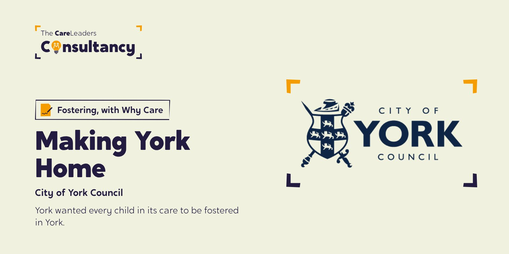
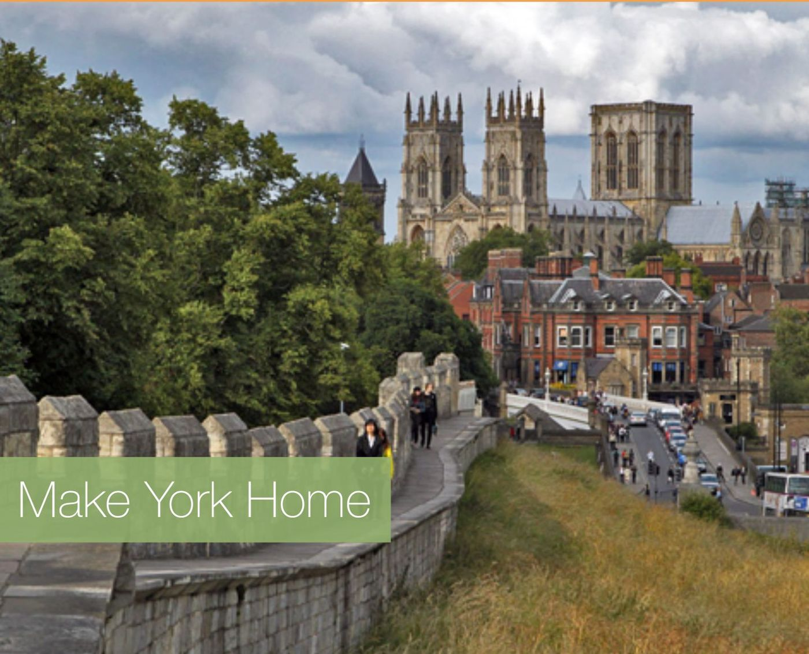

City of York Council: redesigning support for foster carers, with young people in care in the room
York wanted every child in its care to be fostered in York. As part of Innovation Unit’s team, we brought young people in care into the design of Making York Home, through the co-design workshops and design sprints.



The starting point
York wanted all of its young people in care to be fostered in York, and to phase out placements outside the city. Making York Home was the council’s project to redesign support for foster carers to make that possible, run with Innovation Unit. Innovation Unit asked us to make sure young people in care shaped the design.
What we heard
Young people told the project group they needed more support in foster placements. Young people from York’s Show Me I Matter group agreed to meet Luke before each design sprint so their views fed into it, and he reached out to other young people and reported back. After the co-design workshop on 1 February 2016, the project group recorded that the young people had made a valuable contribution and at some points had even led the discussion.
“He engaged young people in care to co-design elements of the model, helping the council better understand the experiences of young people and the ways in which they could be better engaged in future.”
What we did
- December 2015StrategyHow young people would be involved in researching and developing Making York Home
- MeetEvery sideCouncil staff, foster carers, social workers and young people
- From February 2016Co-designWorkshops, with young people’s feedback gathered after the first one
- To June 2016SprintsYoung people from Show Me I Matter prepared with Luke before each design sprint
How we worked
Before every sprint
Young people prepared with us before each round of design, not after decisions were made.
Inside the team
We worked as part of Innovation Unit’s team, so young people’s views reached the same table as the research.
Both sides of fostering
Foster carers and young people in care were heard in the same process.
Innovation Unit led the project, the research and the design sprints. Our part was making sure young people in care were in the room and shaping what came out of it.
What changed
Innovation Unit credited the work with helping the council understand young people’s experiences and how to involve them in future. We don’t yet have a record of how many children have since been fostered in York rather than outside it.

See the work
What we made, and what it looked like.
Make York Home
The scoping and the case for fostering every child in York, in York.
Both sides of fostering
Carers and children in care, inside the team for every sprint.
